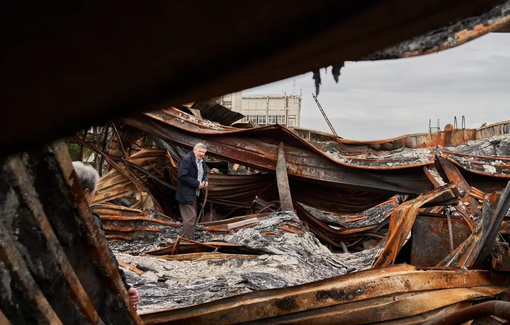

Explosive vs. electromagnetic waves
20.03.23
Kharkiv is famous for a number of institutions working with STEM disciplines. In Soviet times, the Ukrainian Institute of Physics and Technology was established here, where in 1932, for the first time in the USSR, the fission of a lithium nucleus was carried out and the first three-coordinate radar was built. Nobel Prize winner in physics Lev Landau worked here, and Niels Bohr was a visitor of the institution. The institute suffered from Stalinist repressions, five employees were shot, but after World War II, it became one of the leading centers of the USSR's nuclear program. A number of new institutions emerged around the institute, in particular the Physical and Technical Institute of Low Temperatures and the Institute of Radiophysics and Electronics. All of them are located in the northern part of Kharkiv, so they really suffered as a result of Russia’s attack on Ukraine.
We visited the Usykov Institute of Radiophysics and Electronics, which probably suffered the most. The institution is located on Akademika Proskury street, where a house with intact windows would be challenging to find. It is six kilometers away from the destroyed Northern Saltivka district, and ten — from Tsyrkuny, liberated in early May. After a “marshrutka” (mini bus) came under fire nearby, public transport only goes to the area in the mornings and evenings. And yet, the institute works.

We were met by temporary acting director of the institute Yurii Lohvynov, academic secretary Olena Kryvenko and senior research associate Iryna Pochanina. We started the tour with the museum, where the most important inventions are collected.

As Yurii says, the institute was originally set up for the Soviet defense industry, since electromagnetic waves spread not only in the atmosphere, but also in the water, underground, in outer space, which means they can be used for creation of radars and high-precision weapon guidance systems.

The institute was created as a center for theoretical studies, lab research and mass production design. They conduct comprehensive studies of generation, transmission, and reception of electromagnetic waves.

In the museum, we saw generators of millimeter and centimeter waves created on the basis of vacuum devices, klystrons (electrovacuum lamps that amplify a high-frequency radio signal) and magnetrons (generators of electromagnetic waves in the microwave range, used in radar and household appliances such as microwave ovens). The institute has patented its plasma density measurement technology. This is a key technology for the operation of a thermonuclear reactor.
The institute has also developed a method of studying the Earth's surface from space, which can be used to measure the thickness of the glaciers. When in the summer of 1991, the icebreaker Mikhail Somov (then belonging to the USSR, now Russian) got stuck in the Antarctic, it was found and provided with a route through the thinnest ice thanks to satellite radar location.

In the museum, we saw generators of millimeter and centimeter waves created on the basis of vacuum devices, klystrons (electrovacuum lamps that amplify a high-frequency radio signal) and magnetrons (generators of electromagnetic waves in the microwave range, used in radar and household appliances such as microwave ovens). The institute has patented its plasma density measurement technology. This is a key technology for the operation of a thermonuclear reactor.

The institute has also developed a method of studying the Earth's surface from space, which can be used to measure the thickness of the glaciers. When in the summer of 1991, the icebreaker Mikhail Somov (then belonging to the USSR, now Russian) got stuck in the Antarctic, it was found and provided with a route through the thinnest ice thanks to satellite radar location.
Three more inventions now exhibited in the museum would be very useful in modern conditions, but they have not yet been put into mass production: a device that identifies drones (and does not confuse them with birds of similar size and flight speed); an apparatus for searching for people under rubble (reacts to heartbeats and can detect unconscious people), and a pulse radar that sees mines under the surface of the earth even in plastic casing.

After Ukraine gained independence, the situation changed dramatically (since due to the limited funds, the state put way less funding into the defense sector — ed. note). The institute's design and technology bureau was closed, the number of employees in 2022 decreased to 429, of which 273 are scientists. However, the institute's inventions can be useful not only for the military sector, so the management began to refocus the research vector to medicine, subsurface and noise radars; the institution began to participate in international grant programs.

In March and April, when active hostilities took place on the northern outskirts of Kharkiv, the enormous premises of the institute were damaged by shelling. The institute was also visited by looters, but in early May, the management was able to organize security and gradually resume work.

We went outside to inspect the destruction of the institute, and another Russian missile, launched from the territory of Russia, flew overhead. We heard the explosion - as we learned subsequently, it was two kilometers away, and led to a power outage in part of Kharkiv again.

There are many broken windows in the main building of the institute, but two other buildings — experimental production and experimental research — were affected the most. The first had machines for making models that could be transferred to production. There is a gigantic hole in the building resulting from a direct strike, but the machines survived, fortunately.

In the building of experimental research, the first floor was completely destroyed, the equipment bought with the money of international grants, which cost hundreds of thousands of dollars, was destroyed as well. On the ground floor, there is equipment for photolithography and sputtering of surfaces with copper, silver, and aluminum. (This technology is used for production of diffraction gratings that can control a laser beam.) This equipment survived, but it is getting more and more damaged due to rainwater seeping in between concrete slabs.

The scientists joke that throughout the summer, their main scientific activity was the creation of drainage systems from polyethylene film, hoses, and PET bottles. Indeed, there are some rather intricate designs under the ceiling.

In a separate building, the institute keeps the only microwave cryogenic complex in Ukraine, which works with a unique frequency range and uses liquid nitrogen and helium. The complex serves for the research of magnetic nanoparticles, which are then used in the production of devices. Fortunately, the equipment was not damaged, but there was a strike on the roof of the building.

Outside, Hennadii Pochanin, an employee of the institute, demonstrated a robot with the subsurface radar system developed as part of the international NATO program “Science for Peace and Security.” The project is one of the three that the institute is currently carrying out, and it is called "Multi-sensor collaborative robots for the detection of shallowly hidden explosive threats." The problem with detecting mines underground is that they can often be confused with other objects. Therefore, as part of the project, scientists are developing the method of simultaneous scanning with a variety of sensors — a metal detector, a dielectric detector, and a holographic radar (which identifies the shape of objects).
In the main building of the institute, there is a satellite signal reception post that investigates the GPS error and remotely surveys the surface of the planet. The facility was damaged by a strike, but was back up and running by the time of our visit.

At the end of the tour, we went to see biophysicists who are currently working on improving anticancer medication. The idea is to combine a medical drug with iron oxide, and then, when the patient takes the toxic drug, apply a magnetic field to concentrate the drug on the tumor and protect the rest of the body from harm.
Out of 1,000 windows of the institute, 623 were damaged. It will cost about UAH 6 million (about EUR 154,000 as of March 2023) to restore them. The heating system was also destroyed, and the cost of restoring the damaged premises and equipment is yet to be calculated.

Now, 120 employees go to work in the actual institute. 30 people remain abroad, about 30% of employees are in other parts of Ukraine. The institute is getting ready for a winter without heating and trying to save the surviving equipment. Employees conduct as many studies as possible to process and analyze the results remotely, like they did in times of Covid-19.

Yurii Lohvynov is sincerely surprised that the institute which was established and developed at the cost of the Soviet defense industry did not seem to enjoy much interest from the government in 2014. Since then, only a few small projects have been implemented. Ironically, it was here that the science behind the work of weapons guidance systems was developed, that is used, for example, in Kalibr missiles.

The employees of the Usykov Institute don’t look desperate or depressed. They are not scared of major destruction or the prospect of a winter without heating. According to Iryna, most importantly, they want the government to know that they exist, and they can do something — for the country, not for themselves.
This report has been developed within the project supported by the Public Affairs Section of the U.S. Embassy in Ukraine. The views of the authors do not necessarily reflect the official position of the U.S. government.